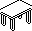
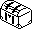

| Knight Lore | How collision works |
Everything that moves in Knight Lore moves the same way. Its handler sets a velocity -- dX, dY and dZ, in bytes +$09 to +$0B of its record -- and adj_for_out_of_bounds cuts that velocity short wherever it would carry the object's box into the floor, a wall or another object's box; add_dXYZ then adds what is left to the position. Most handlers get there through dec_dZ_and_update_XYZ, which first takes one off dZ: that is all gravity is. The player's legs get there through move_player_apply. The same routine is where objects push, carry and harm one another.
adj_for_out_of_bounds takes the three parts of a move in a fixed order, Z first, and each one twice: against the room (adj_dZ_for_out_of_bounds for the floor, adj_dX_for_out_of_bounds and adj_dY_for_out_of_bounds for the walls), then against every other object (adj_dZ_for_obj_intersect, adj_dX_for_obj_intersect, adj_dY_for_obj_intersect). Each test counts the parts already accepted and none of the later ones. So Z is tested where the object stands now, before it has moved sideways; X with the Z move made; Y with both.
A part is shortened one unit at a time (shorten_delta), with the test made again after every unit, until the box fits or nothing is left; the cost grows with the overlap. Because the axes are separate, a diagonal step into a wall keeps the part along the wall and loses the part into it: blocked moves slide.
While it works, the mover sets bit 1 of its own +$07 -- "leave me out of collisions" -- so it does not collide with itself, and clears it at the end (store_clipped_move). An object that has the bit set already is skipped by every scan (is_object_not_ignored) and is not clipped at all: the player's top half, which only follows the legs, and the cauldron's bubbles while they rise.
The floor is the only limit in Z: Z + dZ may not go below the floor's height, $5BAE. There is no ceiling. Across the room the footprint -- the centre, plus or minus the half-size -- has to stay strictly inside the room's half-width either side of its centre, 128. The three room sizes, from room_size_tbl (see room structure):
| Size | Half x | Half y | X from | Y from | Floor |
|---|---|---|---|---|---|
| square | 64 | 64 | 64 to 192 | 64 to 192 | $80 |
| narrow in x | 32 | 64 | 96 to 160 | 64 to 192 | $80 |
| narrow in y | 64 | 32 | 64 to 192 | 96 to 160 | $80 |
Two things switch the wall test off: the player's walk into a new room (the top four bits of +$0C, counting down) and bit 0 of +$07, which an archway sets on the player while he is close to it (chk_plyr_spec_near_arch). That is how he gets into an arch at all. The arch's pillars are objects, so they still stop him.
Another box stops a move along one axis if it overlaps the mover on the other two and would overlap on this one after the move. On X and Y, overlapping means the centres are closer than the two half-sizes added (do_objs_intersect_on_x, do_objs_intersect_on_y); on Z, that the bases are closer than the height of the lower box (do_objs_intersect_on_z). Exactly touching is not overlapping, so things can stand flush against each other and on top of each other. Every record that is not empty and not marked with bit 1 of +$07 is solid -- walls, blocks, creatures and charms alike. A part cut short sets a bit in the mover's +$0C: bit 0 for X, 1 for Y and 2 for Z. Bit 2 is how an object knows it is standing on something.
Each row is a situation set up in an otherwise empty object table and handed to adj_for_out_of_bounds in a simulator when this page was built, in a square room; the answer is whatever the game's code made of it. Moves are dX, dY, dZ.
| Situation | Asked for | Allowed | What else changed |
|---|---|---|---|
| Walking diagonally into a block | +3, +3, -1 | +0, +3, +0 | mover stopped in X and Z (+$0C) |
| Walking into the room's wall at X = 192 | +3, +0, -1 | +1, +0, +0 | mover stopped in X and Z (+$0C) |
| Falling onto a block from 3 units above it | +0, +0, -5 | +0, +0, -3 | mover stopped in Z (+$0C); the block marked as landed on (+$0D bit 3) |
| Walking into a table | +3, +0, -1 | +0, +0, +0 | mover stopped in X and Z (+$0C); the table's dX, dY became +3, +0 |
| Walking into the block called moveable | +3, +0, -1 | +0, +0, +0 | mover stopped in X and Z (+$0C); the block's dX, dY became +3, +0 |
| Standing on a shuttling block that is moving +1 in X | +0, +0, -1 | +1, +0, +0 | mover stopped in Z (+$0C); the block marked as landed on (+$0D bit 3) |
| Walking into a gargoyle (+$0D = $A0: harms both ways) | +3, +0, -1 | +0, +0, +0 | mover stopped in X and Z (+$0C); mover harmed (+$0D bit 6) |
Contact is also how harm passes, through three bits of +$0D: bit 7, harms what it runs into; bit 5, harms what runs into it; bit 6, has been harmed. Whenever a scan finds the mover touching an obstacle, on any axis, the mover's bit 7 becomes the obstacle's bit 6 and the obstacle's bit 5 becomes the mover's bit 6. Bit 6 is what the player dies of: his legs' handler (upd_player_bottom) looks at it every frame. Guards, fires, spikes and the like set both 7 and 5 (set_both_deadly_flags), so it makes no difference which of the two moved; the portcullis (upd_9) sets bit 7 on itself, so it harms what it comes down on. The names for bits 7 and 5 are inferred from that rule and the portcullis, and where else bit 5 comes from has not been traced.
If the obstacle has bit 2 of +$07 set, a blocked X or Y move also copies the mover's whole intended dX or dY into the obstacle's velocity. That is all the collision code does: it does not move the obstacle, and it stops the mover just the same. The obstacle moves when its own handler runs, later in the same pass over the object table -- the player is record 0, so he always goes first -- and what it does then is up to the handler:
| Object | Handler | What a push does |
|---|---|---|
| table (84) | upd_84 | Moves by its velocity, then clears it: one step for every frame it is pushed, and it stops when the pushing stops. |
| chest (85) | upd_85 | Moves by its velocity and keeps it, so by the code it slides on. Not tried. |
| the block called moveable (62) | upd_62 | Clears its velocity before moving, so every push is cancelled. |
| a charm (96 to 102) | upd_96_to_102 | Moves, and stops again once it has moved: a step per push, like the table. |
Watched in a running game, in room $8E with the ghost removed: a table put in the player's path was pushed from x 157 to 129 in 20 frames of walking into it, and stayed at 129 when he stopped. The same table with its type changed to 62 did not move at all in 20 frames, and the player stopped against it. So the block the game calls moveable cannot be moved; whether that was meant is not known.
The templates that set bit 2, read from block_type_tbl: chest (type 85), table (type 84), block (type $3E) (type 62). Charms get it from find_special_objs_here, which gives their records the flags $14.

The table, type 84.

The chest, type 85.
The block called moveable, type 62.
A blocked Z move does two things more. The obstacle gets bit 3 of +$0D, something has landed on it; the block that sinks while it is stood on (upd_91) waits for that bit. And if the mover has bit 2 of +$07 -- the player does -- it takes on the obstacle's dX and dY wherever its own are zero. Because Z is settled first, that borrowed velocity is then tested against the walls and the other objects like any other and made in the same move: standing on something that moves carries you with it.